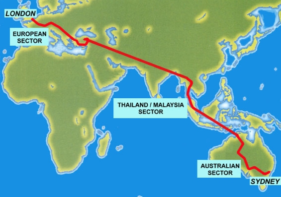
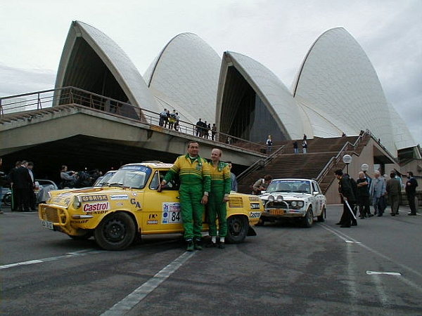

Jak jsme jeli maraton aneb nejdelší světová rallye
První automobilová
rallye z Londýna do Sydney se
jela v roce 1968 a měla slou쬴t k propagaci britských novin a
také na podporu exportu. Celkem se jelo těchto maratonů
šest a v roce 2000 byla mezi stovkou startujících
posádek, z nichž pouze 78 dorazilo až do cíle v Sydney, i
posádka 쬷uté škody 1000 MB ve slo쬰ní
Josef Michl a Marek šimík. Cestu brali velmi v치쬹캩
a tak se kromě důkladných příprav a stavby auta,
které muselo vydr쬰t cestu přes tři kontinenty, rozhodli i
zakoupit tehdy ještě vzácný
digitální fotoaparát a alespoň trochu
zdokumentovat pravděpodobně nejnáročnější
závod svého 쬴vota.


Maraton Londýn Sydney 2000 byl velmi nejednoduchá
zále쬴tost - a to jak v období připrav, tak v průběhu
samotné akce, což potvrdí libovolný jeho
účastník z kteréhokoli roku.
Závodníci v roce 2000 projeli z Londýna přes
Francii Evropou - mimo jiné i přes Českou republiku, kde se jim
dostalo vřelého přivítání na všech
zastávkách - až do Turecka. Tato část zabrala
celkem dva týdny. Jezdci měli všechny svoje věci, včetně
náhradních díů na auta, v bednách,
které vozily kamiony. Nutné opravy mohly tedy
probíhat pouze v polních podmínkách a pouze
pokud se jezdcům podařilo shledat s kamiony.
Druhá část maratonu startovala z Thajska - a
kompletní startovní pole i s kamiony s díly se tam
dostalo největším letadlem světa, nákladním
Antonovem. Jezdci museli posbírat všechny svoje
síly, aby dokázali projet Thajskem a Malajsií, kde
panují u nás nevídané klimatické
tropické podmínky a samozřejmě styl 쬴vota je
úplně jiný.
Kdo se dokázal vyrovnat s vedrem, prachem,
příle쬴tostnými opravami v d쬿ngli a
všudypítomnou vlhkostí, mohl opět Antonovy odletět
na start poslední části cesty. Austrálie byla
náročná jiným způsobem než t0orpické
ostrovy - všudypřítomná červená
hlína a prach, neustálé horko a nekonečné
rovné silnice uprostřed pouště daly zabrat úplně
všem.

Do cíle v Sydney nakonec z původní stovky posádek
dorazilo jen necelých osmdesát. Naše trojice
Josef Michl, Marek šimík a škoda 1000 MB
se v cíli náročného závodu naonec
umístila na třetím místě ve své kategorii.